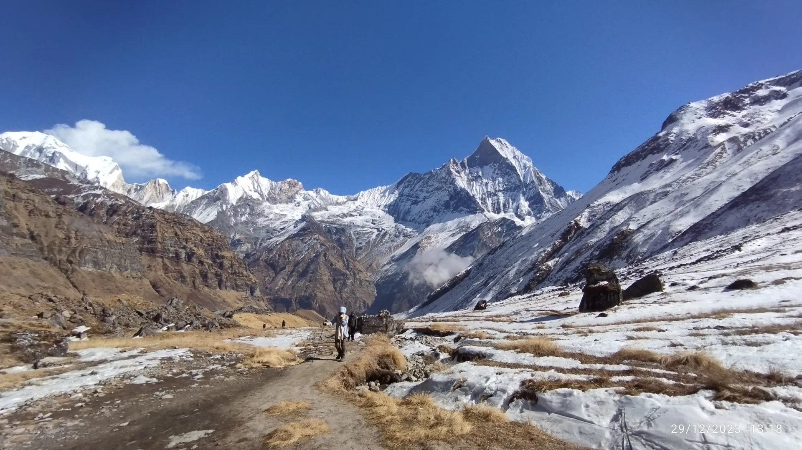
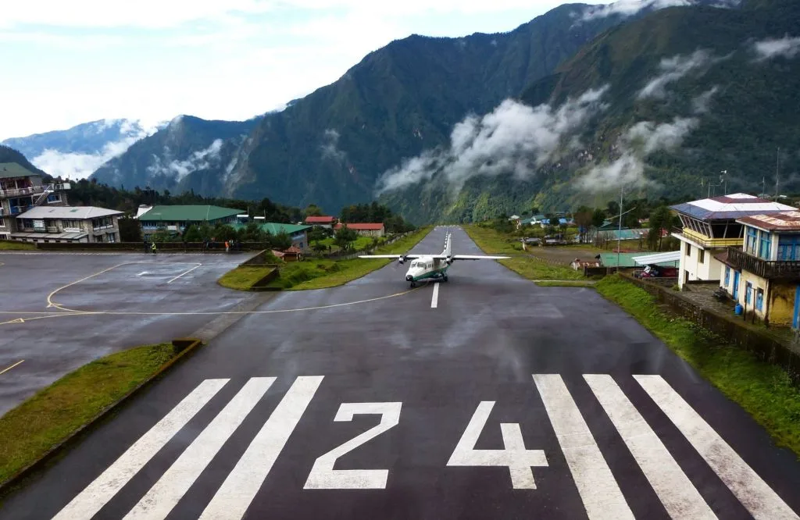
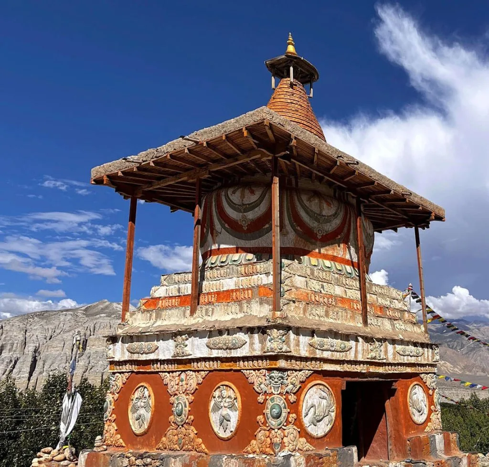
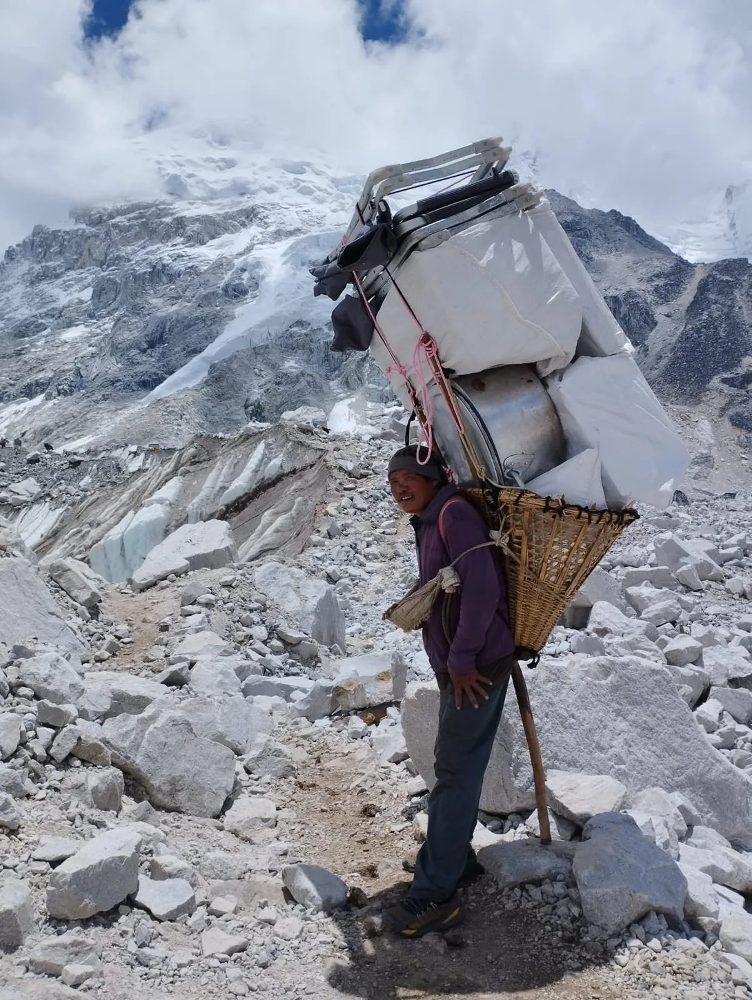
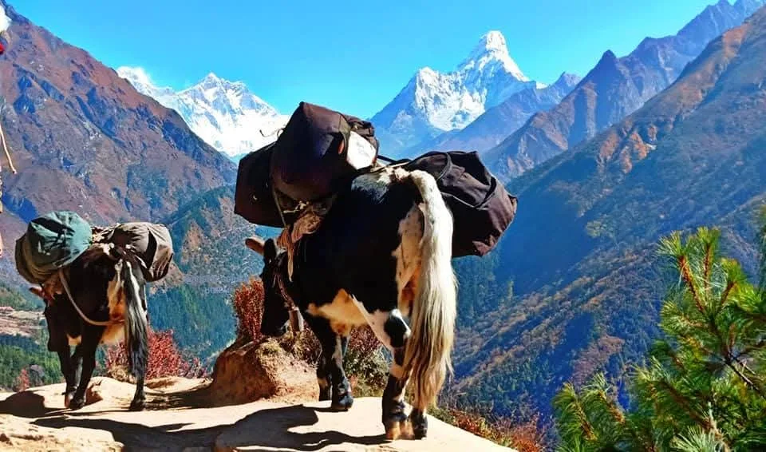

1. Overview of Nepal's Transport Landscape: Terai Plains to High Himalayas
Traveling in Nepal is an adventure in itself. Because the country's elevation vaults from just 60 meters in the southern subtropical Terai to 8,848.86 meters at the summit of Everest within a mere 150 kilometers, building and maintaining transportation infrastructure is an extraordinary engineering challenge.
Unlike much of South Asia, Nepal does not have an extensive passenger railway network (with the sole exception of the 35km cross-border rail link between Jaynagar, India, and Janakpur). Instead, national transport relies heavily on three core pillars:
Air Corridors (Trunk & STOL)
- Trunk Routes: Turboprop flights connecting Kathmandu to major valley cities like Pokhara, Bharatpur (Chitwan), and Bhairahawa (Lumbini).
- STOL Mountain Strips: Short Take-Off and Landing runways carved into steep mountainsides at Lukla, Jomsom, Juphal (Dolpo), and Simikot.
Overland Roadways
- National Highways: Paved arterial roads like the Prithvi Highway, Tribhuvan Highway, and East-West Highway connecting major hubs.
- Rugged Dirt Tracks: Steep gravel and mud roads requiring high-clearance four-wheel-drive jeeps to access remote trekking trailheads.
"Never measure travel in Nepal by kilometers—always measure it in hours. A 200-kilometer drive between Kathmandu and Pokhara can take anywhere from 6 to 9 hours depending on road widening work, traffic congestion, and monsoon rain. Always build contingency buffer days into your travel itinerary." — Ang Tshering Sherpa
2. Arriving in Kathmandu: Tribhuvan International Airport (TIA) Navigation

Virtually all international travelers arrive at Tribhuvan International Airport (KTM / TIA) in Kathmandu. Navigating the arrival terminal smoothly requires knowing the exact steps:
- On-Arrival Visa: Complete the digital visa application form at the self-service electronic kiosks in the arrival hall (or pre-fill it online within 14 days before departure on the Nepal Immigration portal). Proceed to the fee collection counter: $30 USD (15 days), $50 USD (30 days), or $125 USD (90 days). Payment in cash USD, EUR, GBP, or major credit cards is accepted.
- Immigration & Baggage Claim: Show your receipt and passport to immigration officers. Proceed downstairs to the baggage carousels. Luggage carts are complimentary.
- Local SIM Cards & ATMs: In the outer arrival hall, you will find authorized service kiosks for Ncell and Nepal Telecom (Namaste). Having an active data connection is essential for calling taxis and using ride-hailing apps. ATMs and currency exchange counters are also located here.
- Airport Taxis vs. Hotel Pickups: As you exit into the open greeting concourse, ignore aggressive unofficial touts. Head directly to the official Pre-Paid Taxi Counter inside the terminal exit. A pre-paid taxi to Thamel or Lazimpat costs a fixed NPR 800 to 1,200 (~$6–$9 USD). If you book with Igloo Himalaya Treks, our representative will be waiting with your personalized name placard and a private vehicle.
3. Domestic Aviation: Airlines, Routes & STOL Mountain Airstrips

Domestic aviation in Nepal is divided into two distinct operational categories: trunk city routes and high-altitude STOL (Short Take-Off and Landing) mountain flights.
| Airline Operator | Fleet Aircraft | Primary Destinations | Typical In-Flight Experience |
|---|---|---|---|
| Buddha Air | ATR 72-500, ATR 42-320 | Pokhara, Bharatpur (Chitwan), Bhairahawa, Biratnagar, Everest Scenic Flight | Nepal's largest domestic carrier; excellent on-time record on trunk routes; pressurized cabins |
| Yeti Airlines | ATR 72-500 | Pokhara, Chitwan, Bhairahawa, Janakpur, Everest Sightseeing Flights | Major trunk carrier; reliable flight schedules between Kathmandu and major commercial hubs |
| Tara Air (Yeti Sub.) | DHC-6 Twin Otter, Dornier 228 | Lukla, Jomsom, Phaplu, Rara (Talcha), Dolpo (Juphal), Simikot | Dedicated mountain STOL operator; handles high-altitude unpaved and short asphalt airstrips |
| Summit Air / Sita Air | LET L-410 UVP-E20, Dornier 228 | Lukla, Ramechhap, Jomsom, Juphal, Simikot | Specialized high-altitude mountain transport; workhorses of the Everest and western trekking regions |
Luggage Allowance Rules: On trunk routes (Kathmandu–Pokhara), the baggage allowance is generally 20kg to 25kg checked plus 5kg hand luggage. However, on all mountain STOL flights (Lukla, Jomsom, Dolpo), the strict maximum weight limit is 15 kg (33 lbs) total per passenger (10kg main duffle + 5kg daypack). Excess baggage is charged between $1.50 and $2.50 USD per kilogram, subject to aircraft weight and balance restrictions.
4. The Legendary Lukla Flight & The Ramechhap (Manthali) Seasonal Diversion

The flight from Kathmandu or Ramechhap to Tenzing-Hillary Airport in Lukla (2,846m) is famous worldwide. Flying strictly under Visual Flight Rules (VFR), twin-otter aircraft navigate narrow Himalayan valleys before landing uphill on a 527-meter runway.
The Ramechhap (Manthali) Seasonal Diversion
To prevent crippling air traffic congestion at Kathmandu's single-runway international airport during peak trekking seasons, the Civil Aviation Authority of Nepal (CAAN) reroutes nearly all commercial Lukla passenger flights to Manthali Airport in Ramechhap during:
- Autumn Peak: October 1 to November 30
- Spring Peak: April 1 to May 31
How the Ramechhap Transfer Works: Trekkers depart Kathmandu between 1:00 AM and 2:00 AM via shared tourist minivan or private 4WD vehicle for the 130km drive along the BP Highway to Ramechhap (taking approximately 4 to 5 hours). The flight from Manthali to Lukla takes just 12 minutes, allowing aircraft to complete dozens of rapid turnarounds during clear morning weather windows.
5. Scenic Everest Mountain Flights: Seeing the Roof of the World by Air
For travelers with limited time, physical restrictions, or families with young children who cannot embark on a 14-day high-altitude trek, the Everest Mountain Flight offers an unforgettable aerial encounter with the Himalayas.
Departing daily between 6:00 AM and 7:30 AM from the domestic terminal in Kathmandu (operated by Buddha Air and Yeti Airlines), these 50-to-60-minute flights guarantee every passenger an individual window seat. Flying parallel to the Great Himalaya Range, you enjoy uninterrupted views of:
- Shishapangma (8,027m) & Dorje Lakpa (6,966m): Dominating the Langtang horizon near the Tibetan border.
- Gauri Shankar (7,134m): Revered as the sacred abode of Lord Shiva and Goddess Parvati.
- Cho Oyu (8,188m), Lhotse (8,516m), and Mount Everest (8,848.86m): Viewing the iconic pyramid of Everest piercing the jet stream.
Each passenger is invited into the cockpit for a pilot's-eye view and receives a personalized commemorative flight certificate upon landing. Tickets typically range between $200 and $240 USD for international passport holders.
6. Long-Distance Tourist Buses: Deluxe VIP Sofa vs. Standard Coaster

For overland travel along primary tourism corridors (Kathmandu–Pokhara and Kathmandu–Chitwan), Tourist Buses are significantly safer, cleaner, and more comfortable than chaotic local public buses.
Deluxe VIP Sofa Tourist Buses ($15 – $25)
- Seating Configuration: Spacious 2x1 wide reclining leather sofa seats with ample legroom and footrests.
- Amenities: Air conditioning, USB charging ports at every seat, complimentary bottled water, and onboard Wi-Fi.
- Hygiene Stops: Scheduled stops at clean, hygienic highway resort restaurants with Western restrooms.
- Top Operators: Jagadamba, Swift Holidays, Baba Adventure, Planet Travels.
Standard Tourist Buses ($10 – $14)
- Seating Configuration: Standard 2x2 cloth reclining seats (similar to airport coaster buses).
- Amenities: Natural window ventilation, basic bottled water, shared music system.
- Departures: Depart Kathmandu daily between 6:30 AM and 7:00 AM from Sorhakhutte / Balaju; arrive in Pokhara around 2:00 PM – 4:00 PM.
7. Mountain Highway Realities: The Prithvi Highway & Road Conditions

The Prithvi Highway is the vital 200km lifeline connecting Kathmandu to Pokhara. Over the past few years, the Asian Development Bank and the government of Nepal have been undertaking a massive widening project to transform this treacherous two-lane mountain road into a modern four-lane expressway.
While this will eventually reduce driving times to under four hours, ongoing construction means travelers must currently navigate:
- Construction Delays: Periodic single-lane traffic controls and gravel bypasses, extending typical bus journeys to 7–9 hours.
- Dry Season Dust: Heavy dust during pre-monsoon winter and spring months. Keep bus windows closed and wear a comfortable filtration mask.
- Monsoon Landslides (June–August): Heavy rains along steep shale cuttings can cause localized debris flows. Highway clearance crews work continuously, but road travel during peak monsoon requires maximum flexibility.
"Mountain roads in Nepal feature hundreds of sharp hairpin curves along deep river gorges. If you are prone to motion sickness, take an over-the-counter antiemetic (such as Dimenhydrinate or Stugeron) 30 minutes before departure, sit in the front third of the bus near the axle, and focus your eyes on the horizon."
8. Private Vehicle Hire: Sedans, HiAce Vans & Mahindra Scorpio 4WDs

For travelers seeking flexibility, comfort, and direct door-to-door convenience, hiring a private vehicle with an experienced professional driver is the premier option. Self-drive car rentals do not exist for foreign tourists in Nepal due to complex traffic patterns, rugged mountain roads, and insurance liabilities.
Selecting the appropriate vehicle depends on your route and group size:
| Vehicle Class | Passenger Capacity | Ideal Routes & Terrain | Typical Cost Range |
|---|---|---|---|
| Private Sedan (Swift / Dzire) | 1 – 3 Passengers | Kathmandu Valley sightseeing, Nagarkot sunrise, paved highway transfers | $45 – $65 USD / day (city) |
| Toyota HiAce Microbus | 6 – 12 Passengers | Group travel between Kathmandu, Pokhara, Chitwan, and Lumbini on paved roads | $120 – $160 USD / day |
| Mahindra Scorpio 4WD Jeep | 4 – 5 Passengers | Rugged mountain tracks: Besisahar, Syabrubesi, Machha Khola, Salleri, Upper Mustang | $140 – $220 USD / day |
| Toyota Land Cruiser Prado | 3 – 4 Passengers | High-end luxury expedition travel across Mustang, Manang, and western Nepal | $250 – $350 USD / day |
Note: Private vehicle charter prices quoted by Igloo Himalaya Treks include the vehicle, professional driver, fuel, highway tolls, parking fees, and driver food and lodging allowances.
9. Getting Around Cities: Taxis, Tempos, Microbuses & Cycling

Getting around Nepal's urban centers offers a kaleidoscope of transit choices:
Kathmandu Valley (Kathmandu, Patan, Bhaktapur)
- Metered Taxis (White Suzuki Altos): Found outside major hotels, street corners, and tourist hubs. By law, drivers should engage the meter, but many refuse during peak hours or nighttime. Always insist: "Meter ma jaam" (Let's go by meter) or agree on a firm price beforehand (NPR 400–600 within central Kathmandu; NPR 1,200–1,500 to Bhaktapur).
- Safa Tempos (Electric Three-Wheelers): White, zero-emission electric tuk-tuks operating fixed radial routes connecting Ratna Park to Patan, Thamel, and Maharajgunj. Ultra-cheap (NPR 20–30) and eco-friendly.
- Local Microbuses: Crammed minibuses with conductor boys shouting destinations from the doorway. Very cheap, but crowded and confusing for non-Nepali speakers.
Pokhara (Lakeside & Dam Side)
Pokhara is far more relaxed than Kathmandu. Most travelers explore the Lakeside strip entirely on foot or by renting mountain bicycles (NPR 500–800/day) or electric scooters. Local taxis operate fixed tourist fares to viewpoints like Sarangkot (NPR 1,500–2,000 round trip) and the World Peace Pagoda.
10. The App Revolution: Pathao, inDrive & Electric Mobility
Over the past five years, smartphone ride-hailing applications have completely revolutionized urban transportation in Nepal, liberating travelers from awkward street price negotiations:
inDrive (The Taxi King)
- How it Works: Operates on a transparent bid-your-price model for four-wheel passenger cars. You enter your destination and offer a fare; nearby drivers accept or counter-offer.
- Major Advantage: 30% to 50% cheaper than street-hailed taxis. Drivers arrive directly at your hotel or cafe door.
- Payment: Cash in Nepalese Rupees directly to the driver at the end of the trip.
Pathao (Bikes & Cabs)
- Motorbike Hailing: The fastest way to slice through Kathmandu's notorious peak-hour traffic jams. A driver with an extra helmet arrives in 2–3 minutes (cost: NPR 100–250).
- Pathao Car: Fixed-fare upfront pricing for four-wheel cabs.
- Food Delivery: Also provides rapid food delivery across Kathmandu and Lalitpur.
Installation Tip: Both Pathao and inDrive require an active local phone number for SMS verification. Purchase a local eSIM or physical SIM at the airport upon arrival, download both apps, and navigate the city with complete ease.
11. Trekker Trailhead Transfers: Connecting Cities to the Trailheads
For trekkers, seamless logistics from Kathmandu or Pokhara to the actual mountain trailhead are crucial for beginning the trek on schedule:
| Trek Region & Trailhead | Standard Transport Mode | Travel Duration | Logistical Insider Advice |
|---|---|---|---|
| Everest (Lukla) | Flight from Kathmandu / Ramechhap | 25 min (KTM) / 12 min (RCH) | Book first flight window (6:00–7:00 AM) for clearest mountain weather |
| Everest (Flight-Free via Salleri) | Shared or private 4WD Scorpio Jeep | 9 – 11 hours | Paved road to Phaplu, then rough dirt track to Tham Danda / Paiya |
| Annapurna Circuit (Besisahar / Chame) | Tourist bus to Besisahar + 4WD to Chame | 5 hrs bus + 4 hrs jeep | Skip walking along road construction by taking 4WD straight to Dharapani |
| Annapurna Base Camp (Nayapul / Ghandruk) | Private taxi or jeep from Pokhara | 1.5 – 2.5 hours | Quick morning taxi transfer; begin trekking before midday heat |
| Manaslu Circuit (Machha Khola) | Private 4WD Scorpio from Kathmandu | 7 – 8 hours | Rough unpaved mountain highway beyond Arughat; private jeep strongly recommended |
| Langtang Valley (Syabrubesi) | Public express bus or private 4WD | 6 – 7 hours | Scenic drive passing Trishuli bazaar and Dhunche checkpoint |
12. Helicopter Transportation: Luxury Charters, Flybacks & Rescues
Nepal possesses one of the world's most capable civilian high-altitude helicopter fleets. Utilizing powerful turbine helicopters like the Airbus H125 (AS350 B3e) and Bell 407, rotary aircraft operate safely up to altitudes exceeding 7,000 meters.
Helicopters serve three primary roles in Nepali tourism:
- Scenic Day Tours: Fly directly from Kathmandu to Everest Base Camp, landing at Kala Patthar (5,545m) for photo opportunities and pausing at Hotel Everest View (3,880m) for breakfast with champagne ($950–$1,200 USD per shared seat).
- Trek Heli-Flybacks: The ultimate luxury upgrade for time-constrained hikers. Trek up to Everest Base Camp over 8–9 days for safe acclimatization, then fly from Gorak Shep directly back to Kathmandu in just 45 minutes, saving 3–4 days of grueling knee-jarring downhill descent.
- Emergency Medical Evacuation: Rapid search-and-rescue flights dispatched to evacuate ill or injured hikers from remote mountain hamlets directly to Kathmandu hospitals.
13. Road Safety, Driving Customs & Motorcycle Self-Drive Realities

Before setting out on Nepal's roads, travelers must understand the local driving culture and legal realities:
- Left-Hand Drive: Nepal follows the British system—vehicles drive on the left side of the road with right-hand drive vehicles.
- Horn as Safety Communication: In Nepal, honking your horn is not an act of road rage; it is an essential audible signal used to warn oncoming drivers around blind mountain switchbacks.
- Sacred Cow Right-of-Way: As Nepal's national animal, cows wander freely across city streets and rural highways. Hitting or harming a cow carries severe criminal penalties; all traffic strictly yields to cattle.
- Motorcycle Rentals (Royal Enfield): Enthusiasts frequently rent Royal Enfield Classic 350 or Himalayan 411/450 bikes ($25–$45 USD/day) in Kathmandu or Pokhara for road trips to Mustang or the Annapurna foothills. You must hold an International Driving Permit (IDP) with motorcycle endorsement, wear a DOT/ECE-certified helmet, and possess genuine off-road gravel riding experience.
14. Master Transit Cost & Travel Time Comparison Table (2026–2027)
To help you budget accurately for your holiday in Nepal, here is a master comparison of typical fares and durations across all major transport modes:
| Route & Journey | Transport Mode | Typical Cost (USD) | Travel Time | Booking Channel |
|---|---|---|---|---|
| Kathmandu ↔ Pokhara | Domestic Flight (ATR-72) | $110 – $135 one-way | 25 minutes | Agency or Airline website |
| Kathmandu ↔ Pokhara | VIP Sofa Tourist Bus | $15 – $25 one-way | 6 – 8 hours | Online / Travel Agency |
| Kathmandu ↔ Pokhara | Private Scorpio 4WD | $140 – $180 total | 5.5 – 7 hours | Igloo Himalaya Treks |
| Kathmandu / Ramechhap ↔ Lukla | Twin Otter STOL Flight | $380 – $440 round-trip | 12 – 25 minutes | Trekking Agency |
| Kathmandu ↔ Chitwan (Sauraha) | Tourist Bus | $12 – $18 one-way | 5 – 6 hours | Online / Travel Agency |
| Kathmandu ↔ Syabrubesi (Langtang) | Private 4WD Jeep | $140 – $170 one-way | 6 – 7 hours | Igloo Himalaya Treks |
| Kathmandu ↔ Machha Khola (Manaslu) | Private 4WD Jeep | $180 – $220 one-way | 7 – 8 hours | Igloo Himalaya Treks |
| Kathmandu Airport → Thamel Hotel | Pre-paid Airport Taxi | $7 – $9 (NPR 800–1,200) | 20 – 35 minutes | Airport Pre-Paid Booth |
| Central City Short Trips | inDrive / Pathao Taxi | $2.50 – $4.50 | 10 – 20 minutes | Mobile App |
Frequently Asked Questions (FAQ) About Transportation in Nepal
Select a category below to explore expert answers to the most common questions travelers ask about Transportation in Nepal:
Difficulty & Fitness

Ready to Experience the Himalayas?
Whether you are preparing for high-altitude trekking, cultural circuits, or alpine summit expeditions, start planning a bespoke journey tailored to your fitness, travel season, and style.